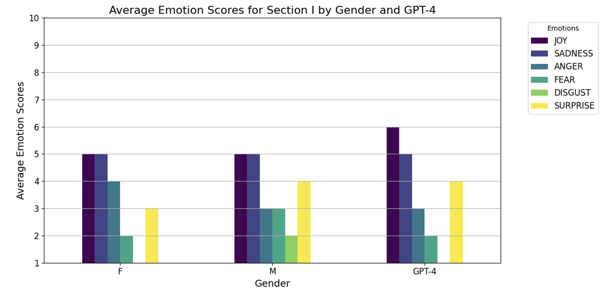
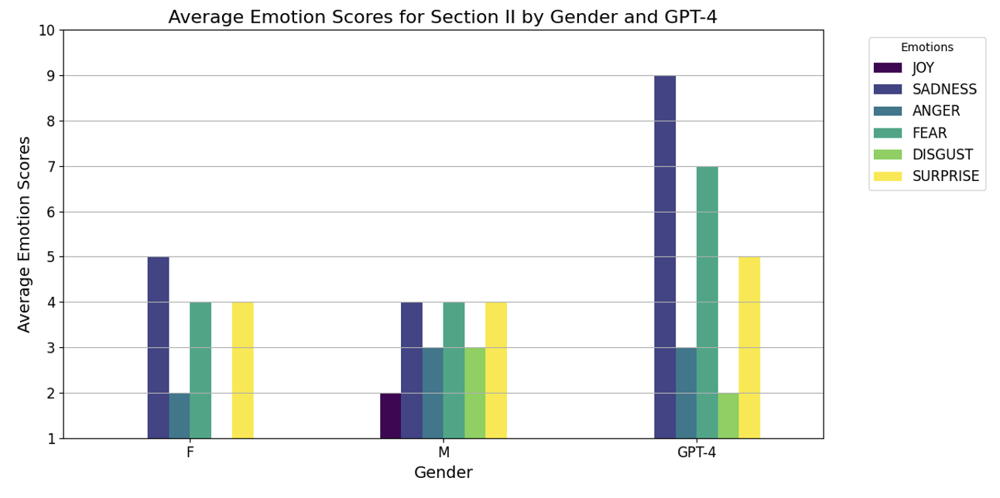
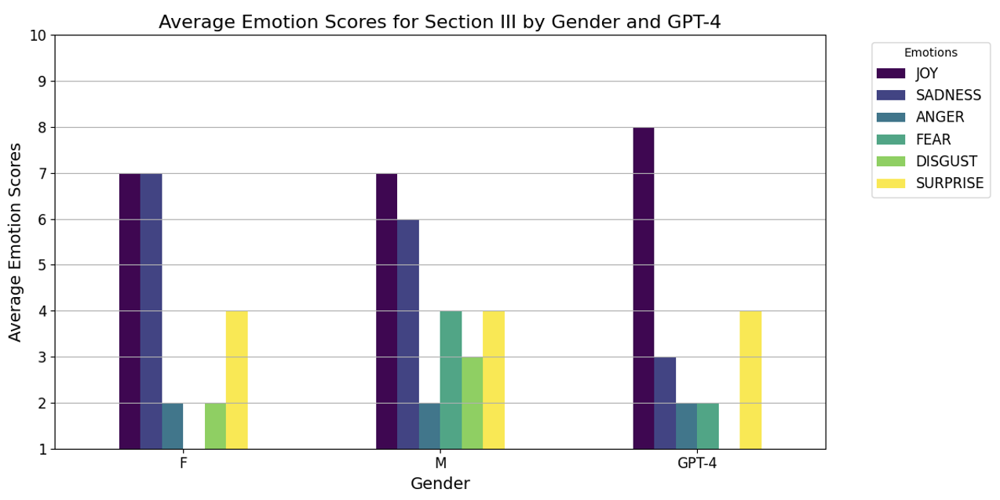

Abstract
This thesis aims to conduct a comparative analysis of the human and AI capability in understanding Virginia Woolf’s work “To the Lighthouse”, with the goal of assessing the machine’s ability to segment text and analyze emotions in the novel. Specifically, in the first task, we ask a large language model (ChatGPT-4) and a group of human readers to segment the first chapter of the novel. In the second task, we ask instead to assess the emotional perception conveyed by three different passages of the novel, considering a spectrum of six different emotions. In particular, we found that ChatGPT- 4 aligns more with STEM-background persons in terms of segmentation capabilities, while people from humanities adopt a segmentation approach that is more adherent to the editorial structure of the text. In the Emotion Analysis, the results obtained show a high correlation between the two samples, with no substantial differences between the male and female participants; though notable differences arise in its emphasis on subtle emotions, such as sadness and fear, where the model tends to amplify symbolic and descriptive elements compared to human readers. Finally, we include a navigable web resource that showcases visualizations of the emotional analysis conducted by ChatGPT-4. This platform traces the emotional evolution of the characters in the text and identifies key emotional dynamics at specific narrative moments, enabling an in-depth exploration of the potential of AI as an assistant for literary analysis.
Text Segmentation
1.1 Sample
The sample includes 14 participants aged 24-30, all with master’s degrees and from the Veneto region. We divided the group into humanists, i.e., those who studied in classical fields (such as literature and law), and non-humanists, from scientific-economic fields (economics, engineering). In addition, we included a comparison with the segmentation performed by GPT-4 (ChatGPT), to analyze whether and how an artificial intelligence model differed from human judgments in the perception of narrative events; and the BOOK, i.e., the original paragraph of the first chapter of to the lighthouse in books.
| Group | Segmentations |
|---|---|
| Humanist (H) | 20, 19, 21, 30, 19, 54 |
| Non-Humanist (NH) | 86, 79, 69, 57, 77, 68, 49, 87 |
| Book (B) | 28 (original paragraph divisions) |
| GPT-4 | 63 |
1.2 Materials
During the analysis phase of the segmentations from the first chapter of To the Lighthouse, I used Excel to create a dataset containing binary information about the segmentations identified by participants. This dataset was then processed using various Python libraries to create visualizations. Python libraries used: pandas, matplotlib, numpy, seaborn.
1.3 Analysis
In the first chapter of To the Lighthouse, we conducted an in-depth analysis, dividing the text into individual sentences and segmenting it into a total of 341 lines. Each participant analyzed the text, inserting a segmentation bar where they thought a significant event ended. We then numbered the identified lines for each participant and converted the data to binary numbers (0 if no segmentation, 1 if the sample segmented into that line). This conversion facilitated the graphical representation and classification of segmentations, allowing clear visualization of differences.

Then we continued the analysis by calculating Hamming Distance, a measure commonly used in text segmentation studies to assess similarity between segments (Michelmann et al., 2023). This measure is concerned with analyzing the dissimilarity between two binary sequences (sequences composed of only “0”s and “1”s); by counting how many positions differ between the two vectors. This value thus indicates how similar or different the detected segment boundaries are relative to the reference profile, considering not only the shared segmentation points but also the positions where the boundaries differ (including the “0”s). For example, out of a total of 100 positions (341 in our case), if the two vectors (human and GPT-4 samples) differ in 10 positions, the Hamming Distance would be 10/100 = 0.1. This indicates that 10% of the positions are different between the two vectors. In the case of the first human sample, presented in Table 3 below, with a total of 341 positions (rows in the first chapter), a Hamming Distance of 0.070 indicates that 7% of the positions differ from the book’s segmentation model, corresponding to 24/341. The greater the distance, the greater the dissimilarity between the segmentations compared to the original structure. Second, we calculated the Jaccard Distance, a statistical metric commonly used to measure the dissimilarity between two binary sets. The Jaccard Distance evaluates the agreement of segmentation points (where both vectors have a “1”) only at the points in common, without considering the positions where they differ. For example, in the case of the first human sample, which shows a dissimilarity of 7% according to Hamming Distance (thus a similarity of 93% with the segmentation provided by the editorial text), Jaccard’s Distance indicates a 66.6% dissimilarity. This means that 33.4% of the segmentation points (positions with a “1”) are shared between the two vectors. Consequently, the Hamming Distance is effective in assessing the overall global dissimilarity, while the Jaccard Distance is more specific in evaluating the shared segmentation points.
| HUMANS | HAMMING'S DISTANCE | JACCARD'S DISTANCE |
|---|---|---|
| H1: HUMANIST | 0.070 (93%) | 0.666 (33.4%) |
| H2: HUMANIST | 0.073 (92.7%) | 0.675 (32.5%) |
| H3: NON HUMANIST | 0.202 (79.8%) | 0.758 (24.2%) |
| H4: NON HUMANIST | 0.170 (83%) | 0.707 (29.3%) |
| H5: NON HUMANIST | 0.143 (85.7%) | 0.671 (32.9%) |
| H6: HUMANIST | 0.035 (96.5%) | 0.387 (61.3%) |
| H7: HUMANIST | 0.093 (90.7%) | 0.711 (28.9%) |
| H8: NON HUMANIST | 0.114 (88.6%) | 0.629 (37.1%) |
| H9: HUMANIST | 0.073 (92.7%) | 0.694 (30.6%) |
| H10: NON HUMANIST | 0.158 (84.2%) | 0.683 (31.7%) |
| H11: NON HUMANIST | 0.146 (85.4%) | 0.684 (31.6%) |
| H12: NON HUMANIST | 0.111 (88.9%) | 0.666 (33.4%) |
| H13: NON HUMANIST | 0.178 (82.2%) | 0.693 (30.7%) |
| H14: HUMANIST | 0.137 (86.3%) | 0.734 (26.6%) |
Tab. 3: Comparison of Humanists and Non-Humanists vs Editorial Segmentation.
| HUMANS | HAMMING’S DISTANCE | JACCARD’S DISTANCE |
|---|---|---|
| H1: HUMANIST | 0.143 (Similarity: 85.7%) | 0.742 (Similarity: 25.8%) |
| H2: HUMANIST | 0.170 (Similarity: 83%) | 0.816 (Similarity: 18.4%) |
| H3: NON HUMANIST | 0.140 (Similarity: 86%) | 0.489 (Similarity: 51.1%) |
| H4: NON HUMANIST | 0.096 (Similarity: 90.4%) | 0.379 (Similarity: 62.1%) |
| H5: NON HUMANIST | 0.152 (Similarity: 84.8%) | 0.565 (Similarity: 43.5%) |
| H6: HUMANIST | 0.137 (Similarity: 86.3%) | 0.712 (Similarity: 28.8%) |
| H7: HUMANIST | 0.137 (Similarity: 86.3%) | 0.671 (Similarity: 32.9%) |
| H8: NON HUMANIST | 0.117 (Similarity: 88.3%) | 0.500 (Similarity: 50%) |
| H9: HUMANIST | 0.158 (Similarity: 84.2%) | 0.794 (Similarity: 20.6%) |
| H10: NON HUMANIST | 0.126 (Similarity: 87.4%) | 0.472 (Similarity: 52.8%) |
| H11: NON HUMANIST | 0.161 (Similarity: 83.9%) | 0.591 (Similarity: 40.9%) |
| H12: NON HUMANIST | 0.131 (Similarity: 86.9%) | 0.131 (Similarity: 86.9%) |
| H13: NON HUMANIST | 0.140 (Similarity: 86%) | 0.484 (Similarity: 51.6%) |
| H14: HUMANIST | 0.129 (Similarity: 87.1%) | 0.550 (Similarity: 45%) |
Tab. 4: Comparison Humans (Humanists and Non-Humanists) vs GPT-4.
1.4 Results
LIMITATIONS
This study presents some important limitations to consider; the sample size is relatively small, consisting of only 14 participants. This limited number stems from logistical and practical challenges in recruiting individuals for a task that goes beyond a simple questionnaire.
Another limitation might relate to the demographic composition of the participants; as they all come from the same region (Veneto), are between 24 and 30 years old. This homogeneity may influence the results, reducing the variability of responses due to the overly specific. To improve this research, it would be of interest to include more varied samples, allowing us to explore the impacts of these variables through textual segmentation analysis.
DISCUSSION
The results suggest a significant difference between Humanists and Non Humanists groups in relation to the segmentation criteria adopted: Humanists participants tend to identify segmentations that align more closely with the original structure of the narrative text (28 segments), as indicated by the lower Hamming Distance relative to the book’s segmentation (Tab. 3: Hamming similarity: 91.98%; Jaccard Distance similarity: 35.55%). In this context, Hamming Distance proves useful for measuring absolute positional differences, providing a clear indication of the degree of adherence to the original text structure. The Jaccard Distance, meanwhile, is particularly useful for assessing overlap in segmentation points, making it an effective tool for comparing how segments are placed. The complementarity of these measures reveals, in the first experiment (Table 3), a significant alignment of the Humanist sample with the author’s editorial model, suggesting a predisposition among humanities participants toward editorial-style segmentation. In the subsequent experiment, where segment positions were compared using both distance metrics, the Hamming Distance was nearly identical for Humanists (0.145) and Non Humanists participants (0.132), with a slight advantage for Non Humanists. However, a notable disparity emerged in the Jaccard Distance: Non Humanists participants demonstrated a significant numerical advantage, with 54.86% similarity compared to 28.58% for Humanists participants. The nature of the text may have influenced these results; as a novel, it is intuitive that participants with a humanities background, more accustomed to literary reading, would be more in tune with the author’s narrative intentions. Non-humanities participants, on the other hand, may have applied a more analytical approach typical of reading scientific documents, leading to a more detailed and fragmented segmentation. The segmentation performed by GPT-4 which resulted in 63 segments, aligns closely with that of the Non Humanists participants; indicating a preference for a more analytical breakdown of the text. Interestingly, this figure also approaches the overall average of 53 segments identified by the human sample. This observation suggests that GPT-4 may occupy a middle ground, bridging the gap between the more intuitive and organic approach seen in Humanists participants and the more fragmented and detailed style typical of Non Humanists participants. This study highlights the potential utility of AI models such as ChatGPT (GPT-4) for the automatic segmentation of complex texts. An interesting extension could include a larger and more diverse sample as well as the segmentation of scientific texts to explore whether the same distinction between Humanists and Non Humanists participants holds. Comparison with scientific texts could further clarify whether academic training influences the perception of narrative structures and, thus, the way individuals (and AI models) segment a complex text. Overall, this study represents a useful and potentially fruitful experiment for future research on the possibility of using models like ChatGPT for automatic text segmentation, which requires a sophisticated interaction between content understanding and recognition of narrative structures.
Emotion Analysis
2.1 Sample
The experiment was conducted on a sample of 26 human participants, consisting of 15 women and 11 men, comprising between 25 and 30 years of age.
2.2 Materials
To conduct this Emotion Analysis (EA) study, we prepared a document containing instructions and steps to analyze distributed to participants via word of mouth and social networks. The collected data were organized into a JSON file, which was later imported into Python for processing and creating the graphical visualizations. For data analysis and representation, we used Python libraries pandas, matplotlib, seaborn.
2.3 Analysis
Three separate passages from the novel To the Lighthouse were chosen for the following analysis, each representative of one of the novel's three main sections (The Window, Time Passes and The Lighthouse). Before subjecting the texts to analysis, a brief contextualization of each passage was provided to the human participants, as GPT-4, due to its knowledge of the novel, had an advantage over human readers in understanding the narrative context.
FIRST PASSAGE: Text from Chapter IXX, Part I (The Window)
In this scene, the main characters are Mrs. Ramsay and her husband Mr. Ramsay. Earlier, the two had been arguing about the possibility of going to the lighthouse the next day: Mr. Ramsay insisted that the weather would not allow it, while Mrs. Ramsay tried to comfort her son James by promising that they would go. After the discussion, the two remained silent, but both seemed to reflect on the events and their feelings for each other, but without expressing them openly.

SECOND PASSAGE: Text from Chapter III, Part II (Time Passes)
In this passage, time passes silently and nature takes center stage, with wind and destruction symbolizing the inevitable changes. Meanwhile, the Ramsay house falls into neglect and several tragic events affect the family.

THIRD PASSAGE: Text from Chapter XII, Part III (The Lighthouse)
On the voyage to the Lighthouse, James is at the helm of the ship, with his sister Cam sitting beside him. The two sail through the waves near the cliff.

Summary visualization of the three text passages through a heatmap
The Heatmap represents a summary comparison of the average emotions expressed by human participants (men and women in one sample) and GPT-4 for the three passages of the novel To the Lighthouse. The results are organized according to sections of the novel (I, II, III) and data groups (Humans and GPT-4). Each cell contains the mean value attributed to a specific emotion for a specific section, with variation from 1 to 10, where 1 is emotion not present and 10 extremely intense. As for the color scale, displayed in the legend to the right, where light colors (pale yellow) indicate values with lower emotional intensity; while darker colors (intense blue) represent values where there is high emotional intensity. In many sections, the mean emotion scores are similar (such as I-Human and I-GPT-4), maintaining a consistency of color tone. In the second section, however, some more pronounced differences appear between the two samples, such as sadness, where GPT-4 scores 9/10, compared to humans’ 4/10; and fear, where again GPT-4 shows an intensity of 7/10, higher than the human average of 4/10.

2.4 Results
LIMITATIONS
In conclusion of the analysis conducted on the three different steps of To the Lighthouse on the comparison between the human and GPT-4 samples, it is necessary to point out the limitations present in the experiment: limitations of the human sample (26 participants, with a predominance of females), all belonging to the same age group (25-30 years old) and the same region of origin (Veneto). As in the previous chapter, this, leads to a certain cultural and generational bias, where participants because of the same background, could influence the results obtained. Because of this reason, it would therefore be useful to expand the experiment to a larger sample, both in terms of age and cultural background. On the other hand, if we consider the limitations of the systems used, we can point out, how, emotions such as surprise or disgust, may be interpreted differently by human readers than emotions of easier agreement (joy, sadness, fear).
DISCUSSION
To the general Research Question, whether the emotional perceptions between humans and GPT-4 differ in the analyzed steps of To the Lighthouse, the answer is largely negative: the data show significant agreement between the human and AI samples’ evaluations, with a high overall similarity of 83.33% (15 out of 18 emotions are found to be similar or oscillating by a single value), based on the values in Fig. 10. Nevertheless, there are three notable oscillations, two of which are present in the second step, and one in the third. Recall that the points where the samples diverge is the sadness in the second passage (9/10 for GPT-4 and 4/10 for humans), probably derived from the fact that GPT-4 can recognize symbolic and descriptive elements that emphasize a sense of abandonment and loss; such as the destructive, progressive decaying nature of the home, and especially the sudden death of Mrs. Ramsay. It is therefore likely that ChatGPT’s algorithm recognizes such sentiments as absolutely negative, while humans are able to pick up more subtle, melancholic undertones within the text. Also in the same passage, an unusual value is the 7/10 fear from GPT-4 and 4/10 from humans; which could always stem from the way the AI handles the interpretation of language and visual images in the text: elements such as “wind and destruction,” along with the void left by Mrs. Ramsay's disappearance. Ramsay and the aforementioned description of the house, may be perceived as signals of vulnerability and danger, intensifying the level of fear; which is insufficient in human perception, perhaps because they are perceived by the samples as inevitable happenings or an existential reflection rather than a real source of threat. Finally, in the third passage a significant difference emerges between sadness ratings, rated 7/10 by humans and 3/10 by GPT-4. In this passage, the scene describes a moment of contentment on the part of James Ramsay, who finally receives his father's approval as he steers the ship toward the lighthouse, together with his sister Cam. GPT-4 probably focuses particularly on the aspect of pride and satisfaction on James's part, neglecting the side of melancholy dictated by the desire for paternal approval and the remembrance of the trip to the lighthouse in the first chapter of the novel when he was a child and the family had not yet overcome the tragedies that occurred later. Turning instead to the specific question, in which it was asked whether there was any difference in male and female analysis on the same passages in the novel, only 2 passages out of 18 would be considered “different” (by more than one point), resulting in a similarity of 88.89%. precisely, the discrepancies concern the feeling of disgust in the second passage, where women attributed 1/10, and men 3/10; and fear in the third passage (women 1/10 and men 4/10). Interestingly, these slight discrepancies reflect interpretations between genders on issues such as abandonment and paternal judgment. In conclusion, the analysis conducted on the passages in To the Lighthouse suggests that GPT-4 represents a valuable tool for the Emotion analysis of complex literary texts, capturing the subtlety of the six emotions used, as opposed to the simple “positive, neutral and negative” polarity seen in previous studies; with some relevant differences, due to the different interpretation of symbolic elements and complex emotional situations that are subjectively analyzed by the individual subject; particularly in subtle emotions such as the sphere of sadness and disgust. This study wishes to suggest a yet unexplored ground for analysis, where very large datasets (100,000 or more samples) should be included to simplify the work of understanding or analyzing a complex text for any kind of study or audience, in order to arrive at a deeper understanding of the emotional response to literary works such as Woolf’s.
About the Novel
- 1. Information about To the Lighthouse
- 2. Comparison between Vader and GPT-4
- 3. Matrix of Correlation
1. Information about To the Lighthouse
ABOUT THE AUTHOR
Virginia Woolf (London, January 25, 1882 - Lewes, March 28, 1941) was born as Adeline Virginia Stephen, daughter of Leslie Stephen, literary critic and historian; and Julia Prinsep Jackson. From an early age she showed considerable interest in the literary arts: collaborating with her brother Toby on the Hyde Park Gate newspaper and having access to her father’s library, where she developed a passion for the classics and the art of writing (Reid, 2024). During her teenage years, however, she was marked by several family tragedies, including, in 1895, the death of her mother, which caused, in addition to intense personal grief, the sale of her seaside home, Talland House, a place that influenced the writing of To the Lighthouse. Subsequently, she faced further significant losses while studying literature and history at King's College London; such as the death of his half-sister Stella, and in, 1904, that of his father. It is important to note her life later in Bloomsbury, where she moved with her brothers Toby and Vanessa, and where she met her future husband, and “partner” Leonard Woolf. Together with her future husband, Virginia would enter literary circles with prominent intellectuals of the time including Bertrand Russell, Ludwig Wittnenstein, and others, and founded the publishing house Hogarth Press, which published Sigmund Freud, James Joyce, Italo Svevo, and Virginia Woolf herself (Reid, 2024). Despite considering that period of her life and her marriage to Leonard as happy moments, Virginia Woolf always struggled with deep psychological issues. These are now attributed to probable bipolar disorder, in which she alternated between euphoric moments and emotional breakdowns. Virginia unfortunately, along with the heavy family losses suffered at a young age, she and her sister Vanessa were victims of sexual abuse by their half-brothers George and Gerald for many years. These traumas certainly influenced to a sense of alienation and left indelible marks on her psyche, which are reflected in several of her works, where she critiques social issues such as misogyny, violence, and the relationship between body and identity (Bond, 2000). One particular study (Mishra & al., 2018) analyzed the novel The Waves (1931), through a semantic analysis, aiming to recognize the reference to the author’s suicidal tendencies: significant words such as “no,” “life,” and “death,” were found to appear approximately 1408, 130, and 44 times, respectively, throughout the novel. In fact, it was found that Woolf uses expressions to create an atmosphere in which death turns out to be “positive” and “glorious,” the only solution for the attainment of serenity; in this context, the character Rhoda, represents anxieties and insecurities of the writer, later freeing herself through suicide. According to this study, in the novel, compared to her letters, in which she would seem more contained, Woolf dives free rein to her psychic frustrations, as she can hide behind the fiction of the novel. Virginia Woolf stands out in the modernist literary landscape for her innovative style that departs from the conventions of the classical 19th-century novel. As previously discussed, (Ch. I, paragraph 1, p. 5), she abandons the figure of the omniscient narrator and replaces it with the narrative technique of the stream of consciousness, which aims to represent the continuous flow of thought of the characters; paying more attention to the emotional aspect than to the interweaving of plot or external events (Sang, 2010).
TO THE LIGHTHOUSE
The novel in question, To the Lighthouse (1927), perfectly embodies these characteristics, as highlighted by its structure, divided into three main parts: The Window, Time Passes, and The Lighthouse. Although the first and last parts are the most extended, both take place over the course of a single day, making the time in the novel reflect more psychological than real time. The story is thus set between 1910 and 1920 and follows the family dynamics of the Ramsay family at their summer home on the Isle of Skye in the Hebrides, Scotland. The first part of the novel (consisting of 19 chapters) focuses on the Ramsay family (consisting the patriarch Mr. Ramsay, his wife Mrs. Ramsay and their eight children) as well as various friends and servants (Lily Briscoe, a painter who is painting a portrait of Mrs. Ramsay, Charles Tansley, William Bakes, Paul Raylely, Augustus Carmichael and others). The novel opens with six-year-old James Ramsay’s request to visit the lighthouse, a request that will immediately be denied by his father due to poor weather forecasts. The second part, Time passes (consisting of 10 chapters), is set ten years later and begins with the deaths of several central characters (Mrs. Ramsay, Adrian the eldest son, and Prue from complications during childbirth) during World War. It also explores the psychological and physical desolation caused by the events. Central to this section is the figure of the housekeeper, Mrs. McNab, who returns to care for the now gloomy and dilapidated house and prepare it for the family’s return. The last part, The Lighthouse (consisting of 13 chapters), sees Mr. Ramsay fulfill the promise he made to young James years earlier: to visit the lighthouse with him and his sister Cam. The journey, however, turns out to be full of conflicts and difficulties, which find resolution upon reaching the destination. Meanwhile, the poet Augustus Carmichael and the painter Lily Briscoe do not participate in the trip; she resumes work on her painting of Mrs. Ramsay, and by overcoming her insecurities and doubts, she manages to complete it, finding a sense of artistic fulfillment in its realization. The novel concludes with the completion of the painting, symbolizing not only the young woman’s artistic return but also her acceptance of loss.
2. Comparison between Vader and GPT-4
Analisi comparativa tra Vader e GPT-4 nell'interpretazione del testo...
3. Matrix of Correlation
Presentazione della matrice di correlazione tra emozioni e segmentazione...